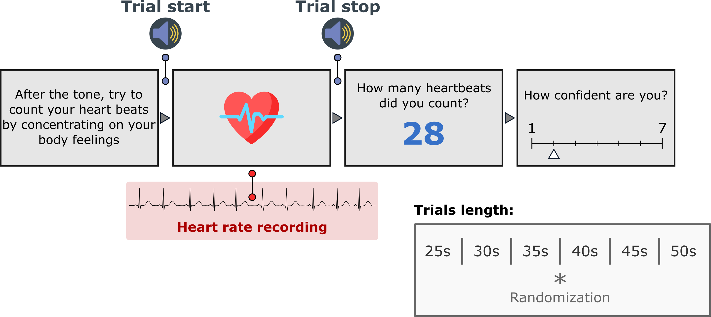

Heartbeat Counting task#
The Heartbeat Counting task (HBC) [Schandry, 1981, Dale and Anderson, 1978] compares the number of heartbeats a person reports over a fixed window with the number recorded. The score is usually taken to index interoceptive accuracy. The task is established, and the package keeps it because much of the literature rests on it. A good score can come from a plausible estimate of heart rate rather than from feeling beats; what heartbeat counting can establish sets out the evidence.
What a trial looks like#
A tone marks the start of the window. The participant silently counts the heartbeats they feel while the pulse is recorded. A second tone marks the end. They then type the number they counted and press enter, and rate their confidence from 1 (“Guess”) to 7 (“Certain”) on the keyboard.

One HBC trial. The window lengths and the 1 to 7 confidence scale are the defaults.#
The default version, taskVersion="Garfinkel", runs six counting windows of 25, 30, 35, 40, 45 and 50 s in random order. taskVersion="Schandry" runs three windows of 25, 35 and 45 s after a minute of rest, separated by 30 s rests, in that fixed order. With runTutorial=True the session starts with instruction screens, and in every version a 30 s rest with the pulse recorded precedes the first window. The default version takes about 4 minutes.
What you need#
A pulse oximeter on a USB port (the Nonin 3012LP Xpod by default), or an ECG or PPG device streaming over Lab Streaming Layer. Recording devices covers both and how to check the oximeter before a session.
Speakers or headphones for the start and stop tones.
A keyboard.
Running it#
Copy wrappers/hbc.py from the repository next to your data folder and run it:
python hbc.py
A dialog asks for the participant and session identifiers, the serial port the oximeter is on (python -m cardioception.check_device --list lists the ports), the setup and the language. The same in a script:
from cardioception.HBC.parameters import getParameters
from cardioception.HBC.task import run
parameters = getParameters(
participant="Subject_01", session="HBC", serialPort="COM3",
setup="behavioral", taskVersion="Garfinkel")
run(parameters, runTutorial=True)
parameters["win"].close()
With an LSL device, pass recorder=LSLRecorder(name="PLUX", channel="ECG2", signal_type="ecg") instead of a port, as on the HRD page. setup="test" replays a recorded pulse, for checking a script without a device. Escape ends the session.
The main settings#
Argument |
Default |
Meaning |
|---|---|---|
|
|
|
|
|
|
|
|
A |
|
|
|
|
|
The port the oximeter is on |
|
|
Root of the run directories |
|
|
Allow writing into a run directory that already holds results |
|
drawn |
Seeds the order of the windows; recorded in the manifest |
|
none |
|
The window lengths and conditions are parameters["times"] and parameters["conditions"] ("Rest" or "Count"); a custom schedule is set by editing them after getParameters returns.
What it saves#
A session writes to data/sub-<participant>/ses-<session>/run-<YYYYMMDD-HHMMSS>/, under resultPath when it is given.
File |
Contents |
|---|---|
|
One row per window |
|
The pulse recorded during the rest and during window |
|
The settings, the seed and the version, written before the first trial |
|
The rows written after every window, and the session’s log |
The columns of *_final.txt:
Column |
Meaning |
|---|---|
|
The window number, from 0 |
|
|
|
The length of the window in seconds |
|
The number the participant typed |
|
The rating on the scale shown, and its response time. |
The task does not count the recorded beats. The true count of each window comes from its pulse file.
Scoring#
Detect the beats in each *_ppg-<n>.txt file, count them, and score each window with the accuracy of Hart et al. [2013]:
A score near 1 is consistent with feeling every beat, and also with knowing one’s resting heart rate; the score cannot separate the two.
Where to go next#
What heartbeat counting can establish: the evidence on what a counting score identifies.
API: every argument of
getParameters.